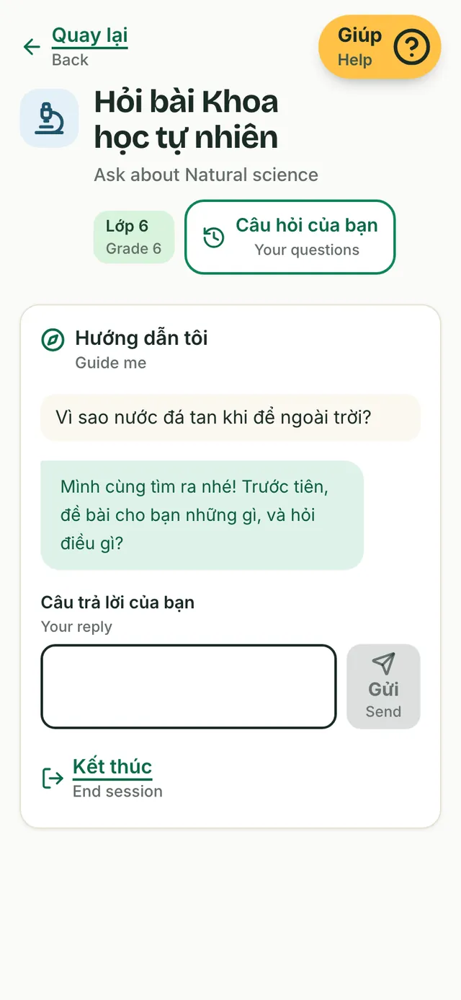
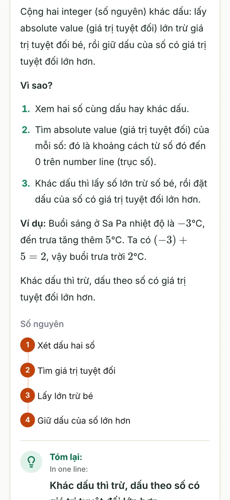

Hỏi bài các mônAsk about any subjectĐang chạyLive
Mọi môn, bằng hai thứ tiếngEvery subject, in two languages
Mỗi môn của khối lớp có một cuộc trò chuyện học tập. Với Hướng dẫn tôi, Ramp hỏi trước, mỗi lần một câu ngắn. Ảnh bài làm được kiểm tra từng bước, và thuật ngữ tiếng Anh của bài có thể lưu lại.Every subject of the grade has a study chat. In Hướng dẫn tôi (Guide me), Ramp asks first, one short question at a time. Homework photos are checked step by step, and the lesson's English terms can be saved.
Trả lời bằngAnswers inTiếng ViệtEnglishSong ngữ

